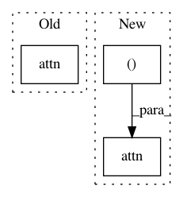

206cfa4bb0fea0cee4c75223625c5e95b57d7010,python/tests/test_pytorch_transformer.py,,attn_values,#Any#Any#,37
Before Change
q, k, v = qkv
B, H, T, _ = q.shape
q = q.zero_()
res, _ = attn(q, k, v)
res = res.numpy()
gold = v.numpy()
for b in range(B):
for h in range(H):
After Change
q, k, v = qkv
B, H, T, _ = q.shape
q = q.zero_()
res = attn((q, k, v, None))
res = res.numpy()
gold = v.numpy()
for b in range(B):
for h in range(H):
In pattern: SUPERPATTERN
Frequency: 3
Non-data size: 3
Instances
Project Name: dpressel/mead-baseline
Commit Name: 206cfa4bb0fea0cee4c75223625c5e95b57d7010
Time: 2019-11-19
Author: blester125@gmail.com
File Name: python/tests/test_pytorch_transformer.py
Class Name:
Method Name: attn_values
Project Name: dpressel/mead-baseline
Commit Name: 206cfa4bb0fea0cee4c75223625c5e95b57d7010
Time: 2019-11-19
Author: blester125@gmail.com
File Name: python/tests/test_pytorch_transformer.py
Class Name:
Method Name: attn_values_seq_mask
Project Name: dpressel/mead-baseline
Commit Name: 206cfa4bb0fea0cee4c75223625c5e95b57d7010
Time: 2019-11-19
Author: blester125@gmail.com
File Name: python/tests/test_pytorch_transformer.py
Class Name:
Method Name: attn_values_sub_mask